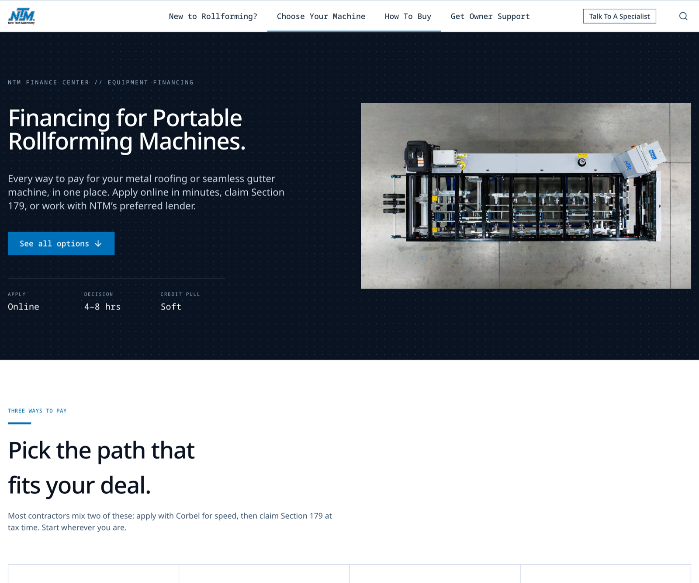
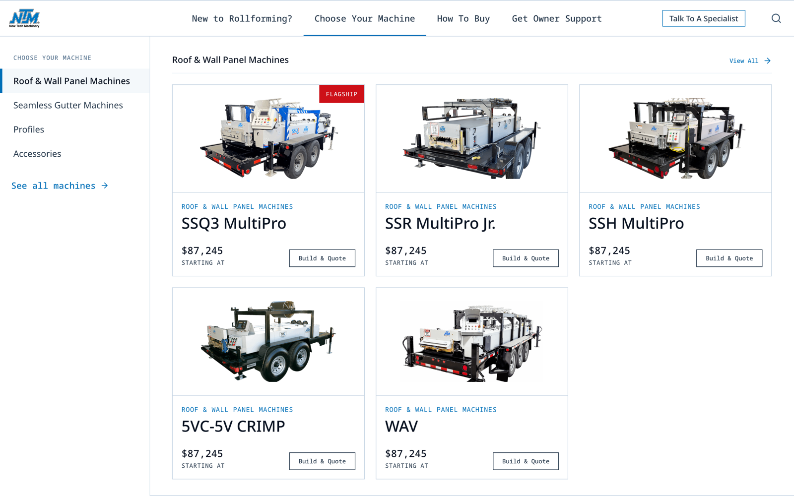
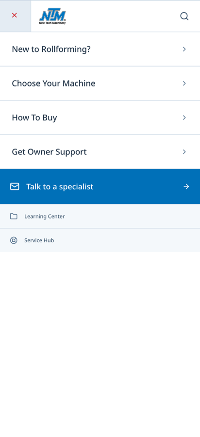
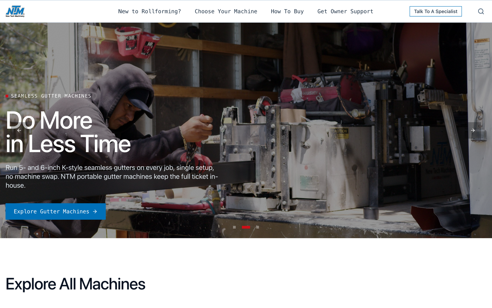

A walkthrough of the strategy, the new features, and where we are.
Every section casts the buyer as the one taking action and growing their business — and positions NTM as the expert who hands them a clear plan, not a sales pitch. This isn't a layer we added. It's how the copy is written.
“The machine you pick is the one we build.” — live homepage copy, the “how you buy” section

Every way to pay, in one place — and we tell them they can use their own bank.
We put this on the machine page, not the homepage — on purpose. Guide buyers to the right machine first; configure once they know what they want. — fewer quotes, but far better-qualified ones

Desktop — machine cards live in the menu


I'm not here to debate the blue today — the point is the system is consistent and intentional. — say this if the room starts on colors